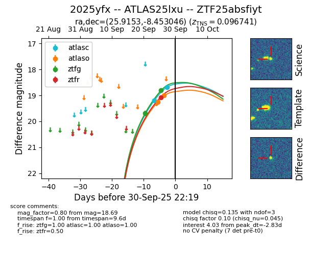
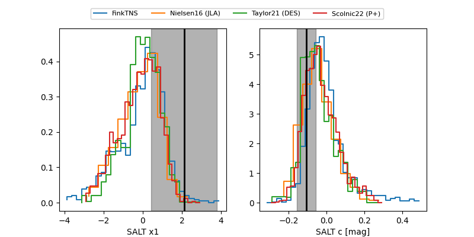

FINK: ZTF25absfiyt
Lasair: ZTF25absfiyt
ALeRCE: ZTF25absfiyt
TNS: 2025yfx
YSE: 2025yfx
ZTF25absfiyt (ztf,fink)
2025yfx (tns,yse)
ATLAS25lxu (atlas)
equatorial (ra, dec) = (25.9153,-8.45305)
galactic (l, b) = (158.8437,-67.60709)


last atlasc=18.69, atlaso=19.00, ztfg=18.81, ztfr=19.07
2 atlasc, 2 atlaso, 2 ztfg, 1 ztfr detections